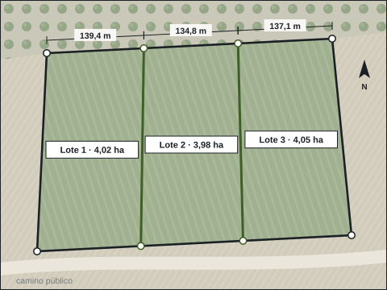

Segregar, dividir o repartir una finca
Si va a vender una parte de una finca, a dividirla entre hermanos o a repartir una herencia, nos ocupamos de la parte técnica. Comprobamos si se puede hacer, medimos la finca y preparamos los planos y el GML (el fichero con sus coordenadas) de cada finca nueva.

Diferencias entre segregar, dividir y repartir
Segregación
Separar una parte de la finca para venderla, donarla o construir en ella.
División
Convertir una finca en varias, por ejemplo entre hermanos.
Partición de herencia
Repartir la finca en lotes de valor parecido, a partir de su valoración.
Qué comprobamos antes de dividir
Hay cosas que pueden impedir la división o cambiar cómo se hace, así que lo primero es estudiar la finca.
- La unidad mínima de cultivo. En suelo rústico ninguna finca resultante puede quedar por debajo de ella, salvo las excepciones de la Ley 19/1995. En Extremadura se fija por término municipal, y las excepciones necesitan autorización de la Junta.
- La licencia. Hace falta licencia de segregación del ayuntamiento, o una declaración de que no es necesaria, y la notaría la pide para la escritura.
- La superficie real. La del Catastro y la del Registro no siempre coinciden con la del terreno, así que medimos la finca.
- Las construcciones. En un plano con las medidas comprobamos la distancia de cada una a los nuevos linderos, según la normativa autonómica y municipal.
La documentación que entregamos
Para el ayuntamiento y la notaría
- Plano de la finca matriz y de las resultantes, con sus medidas, sobre el parcelario catastral.
- Plano de las construcciones, con su distancia a los linderos.
- Coordenadas de cada vértice en el sistema oficial.
Para el Catastro y el Registro
- El GML de cada finca resultante.
- El informe de validación gráfica, en el que el Catastro comprueba cómo encaja cada GML con las parcelas de alrededor.
- La propuesta de segregación catastral.
Para inscribir una segregación o una división, el Registro necesita el GML de cada finca resultante.
Particiones de herencia
Repartir las mismas hectáreas no es repartir lo mismo, porque el agua, el acceso y las construcciones pesan. Por eso hacemos los lotes por valor y no solo por superficie.
- Valoramos la finca antes de dibujar los lotes.
- Comprobamos que cada lote cumple la unidad mínima de cultivo.
- Entregamos el plano de cada lote con su superficie, sus linderos y sus coordenadas, y la propuesta de segregación catastral.
Medida en el terreno
Medimos la finca en el terreno o con el dron, según el caso. El vuelo da detalle, pero no tiene valor oficial por sí solo; lo que llega a la notaría y al Registro es el plano con su GML.
Preguntas frecuentes
¿Puedo segregar por debajo de la unidad mínima de cultivo?
Solo en los casos que prevé la ley y, en Extremadura, con autorización de la Junta. Lo comprobamos antes de empezar.
¿Qué superficie vale, la del Catastro o la del Registro?
Para segregar se parte de la superficie real, la que medimos en el terreno. Que luego la recojan el Catastro y el Registro tiene su propio trámite, y a veces hace falta contar con los colindantes.
¿Necesito licencia del ayuntamiento?
Sí: licencia de segregación o una declaración de que no es necesaria. Cuál de las dos depende del municipio y del tipo de suelo, y la notaría la pide para la escritura.
¿Qué quiere hacer con su finca?
Mándenos la referencia catastral y cuéntenos qué quiere conseguir. Le diremos si se puede hacer y cuánto costaría.
- emiliocontadorbrito@gmail.com
- Calle Matilde Tagle Ortiz, 28, 5.º D, 06006 Badajoz